Оглавление
Как сделать лист бумаги из мастики для торта на 1 сентября
Как слепить скрепку для торта на 1 сентября
Как сделать палитру с красками из мастики
Закончилось жаркое лето, и первоклассники с первоклассницами готовятся в первый раз пойти в школу. Этот знаменательный праздник в начале учебного года будет еще ярче, если подарить ребенку вкусный десерт на школьную тему, приготовленный в домашних условиях. Мы расскажем, как украсить торт на 1 сентября – фото и видео внесут ясность, и у вас все получится. Начнем!
Торт со школьной доской
Можно приготовить красивый торт со школьной доской. Вам понадобятся:
- белая мастика, черный и коричневый краситель (или уже готовая окрашенная масса);
- сахарная пудра или мука;
- вода.
Инструменты:
- линейка;
- нож;
- скалка;
- зубочистки (об альтернативах читайте в шаге №3);
- резиновые перчатки;
- кисть.
Можно взять кусочек сахарной мастики или шоколада для моделирования и окрасить его в черный цвет. О правилах окрашивания читайте здесь. Цвет должен быть насыщенным. Также можете использовать коричневую или зеленую массу подходящего оттенка.
Порядок действий такой:
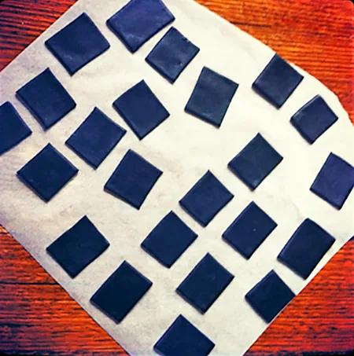
- Чтобы приготовить украшение на торт для первого класса, раскатайте мастику и вырежьте из нее прямоугольники для будущих школьных досок. Сделайте предварительную разметку с помощью линейки и используйте хорошо заточенный нож.
- Оставьте прямоугольники на ночь при комнатной температуре, чтобы они высохли.
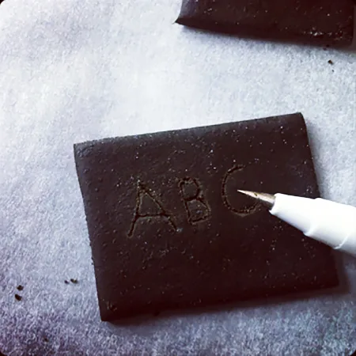
- Ручкой с пищевыми чернилами, зубочисткой, стеком или иголкой вырежьте надпись на доске. К примеру, это могут быть первые буквы алфавита.
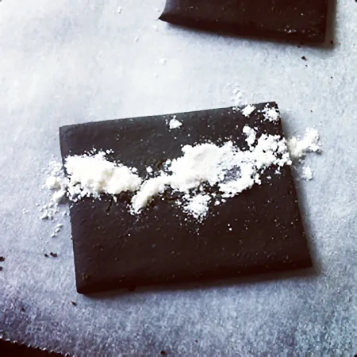
- Возьмите сахарную пудру или муку и посыпьте ею вырезанную надпись.
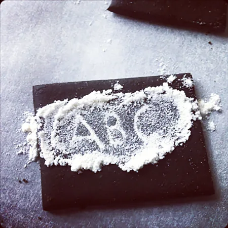
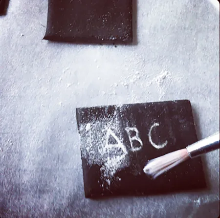
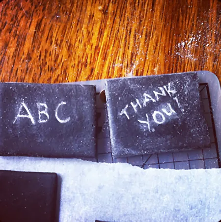
- Вотрите пудру в буквы руками в перчатках, а затем сметите остатки кистью.
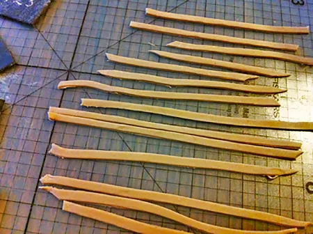
- Если вы посмотрите на фото торта для первоклассника со школьной доской, то заметите, чего еще не хватает: рамки. Для нее вырежьте полоски нужного размера из коричневой мастики.
- Приклейте полоски к доске пищевым клеем, яичным белком или водой.
- Для мела возьмите кусочек белой мастики.
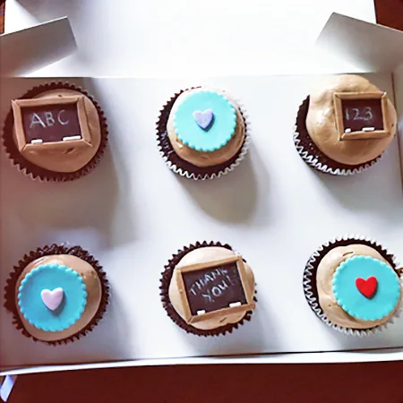
Готово! Используйте получившуюся школьную доску для оформления торта на 1 сентября своими руками. Наглядное видео процесса:
Как вылепить карандаш
Карандаш – это практически символ школы. К тому же делать его очень просто. Вам понадобятся:
- желтая, розовая и коричневая мастика (к примеру, из маршмеллоу);
- вода;
- черный пищевой маркер.
Инструменты:
- кисть;
- нож;
- коктейльная трубочка (желательно полностью прямая);
- ножницы.
Приготовление:
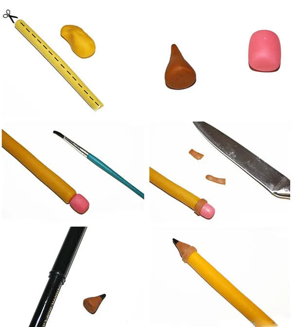
- Чтобы сделать декор для торта на день Знаний, разрежьте одну стенку трубочки вдоль ножницами.
- Раскатайте длинную толстую колбаску из желтой мастики. Положите ее в трубочку и сильно сдавите, чтобы она приняла нужную форму.
- Сделайте маленький конус из коричневой массы. Это будет кончик карандаша. Также слепите небольшой цилиндр из розовой мастики – ластик.
- Черным пищевым маркером нарисуйте грифель на заостренной части коричневого конуса.
- Смажьте водой концы желтого карандаша. К одному прилепите подготовленный конус, к другому – розовый ластик. Декоративный элемент для торта к первому сентября почти готов.
- Раскатайте отдельно две маленькие коричневые полоски. Прикрепите их в местах соединения карандаша и конуса/ластика, чтобы стыка не было видно. Отрежьте лишнюю часть от полосок острым ножом.
- Положите карандаш на пенопласт или другую поверхность и дайте ему полностью высохнуть.
Советы!
-
Сделайте украшения за несколько дней до размещения. У них должно быть достаточно времени для высыхания и затвердения.
-
Вылепите несколько карандашей на всякий случай: некоторые из них могут сломаться или выглядеть не так, как хотелось.
-
Приготовьте по рецепту маленькие мастичные карандаши для капкейков и большие – для торта для первоклашки.
Альтернативный способ лепки на видео:
Как сделать лист бумаги из мастики для торта на 1 сентября
Приготовленный по этой инструкции лист бумаги выглядит очень реалистично. К тому же, когда он полностью высохнет, вы сможете написать на нем послание пищевым маркером.
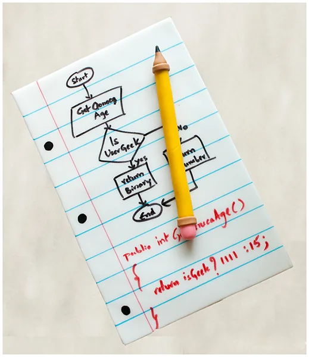
Вам понадобятся:
- белая мастика;
- черный, красный, синий пищевой маркер.
Инструменты:
- скалка;
- нож;
- пергамент;
- небольшая книга (ее размер будет совпадать с размером готового листа);
- линейка.
Итак, посмотрим, как выполняется оформление тортов к 1 сентября – на фото видно основные шаги.
Порядок действий:
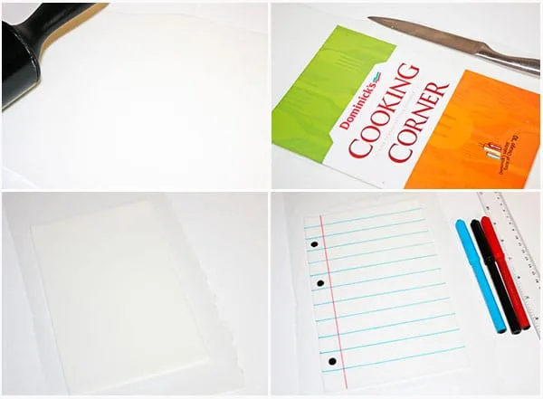
- Максимально тонко раскатайте белую мастику на листе пергамента. Она должна быть чуть толще настоящей бумаги.
- Посыпьте сахарной пудрой раскатанный пласт, чтобы избежать прилипания. Положите на него книгу и ножом обрежьте мастику по периметру обложки.
Обратите внимание!
Книга должна быть не слишком тяжелой, иначе пласт может испортиться.
- Следующий этап при подготовке украшения для торта школьнику. Дайте вырезанному прямоугольнику высохнуть и затвердеть. Время будет варьировать в зависимости от того, в регионе с каким климатом вы живете. Не переходите к следующему этапу, пока лист полностью не высохнет. Иначе во время рисования деталей пищевым маркером его кончик создаст борозду, а краситель растечется. Придется начать делать декор для торта первокласснику заново!
Важно!
Не убирайте пергамент из-под прямоугольника, иначе не получится четкая геометрическая форма.
- Если лист полностью высох, приступайте к прорисовке деталей. Синим маркером прочертите горизонтальные линии с помощью линейки. Красным создайте вертикальную линию для отделения полей. Черным маркером нарисуйте точки для имитации отверстий от дырокола. Не снимайте лист с пергамента, пока все нарисованное не высохнет. Иначе размажете пальцами краситель.
Как слепить скрепку для торта на 1 сентября
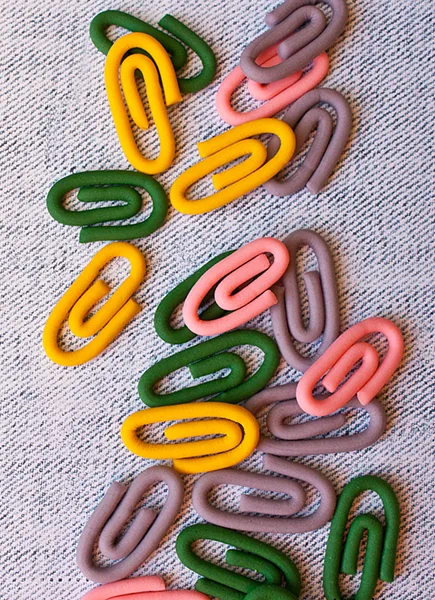
Мастичными скрепками вы красиво декорируете торт первоклашке. Они подойдут и для капкейков – импровизируйте! Вам понадобятся:
- мастика любых цветов;
- экструдер (опционально);
- пергамент.
Порядок действий:
- Если вы:
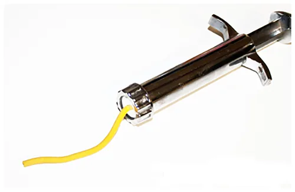
- Используете экструдер, то для работы с этим инструментом мастика должна быть очень мягкой. Наденьте насадку с одним маленьким круглым отверстием. Сделайте из мастики колбаску и вложите ее в экструдер. Выдавите оттуда тоненькую веревочку средней длины.
- Не используете экструдер, это не повод отказаться от такого декора для торта с 1 сентября. Просто раскатайте мастику вручную, стараясь, чтобы получившаяся веревочка по всей длине была одинаковой толщины.
- Придайте веревочке форму скрепки. Предварительно положите ее на пергамент.
Совет!
Чтобы декор получился ровным и аккуратным, нарисуйте несколько скрепок на бумаге. Положите этот лист под пергамент и используйте изображения как шаблон при сворачивании веревочки.
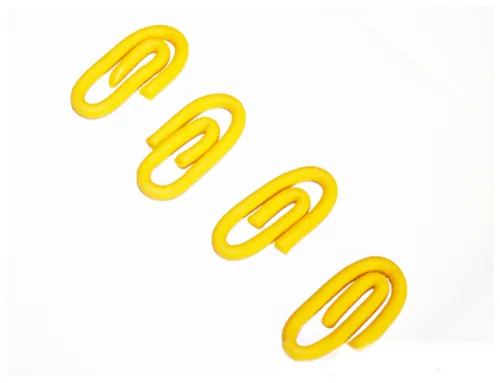
Оставьте скрепки в сухом месте на ночь, чтобы они затвердели. Затем украсьте ими школьный торт или капкейки к 1 сентября.
Видео процесса:
Как сделать палитру с красками из мастики
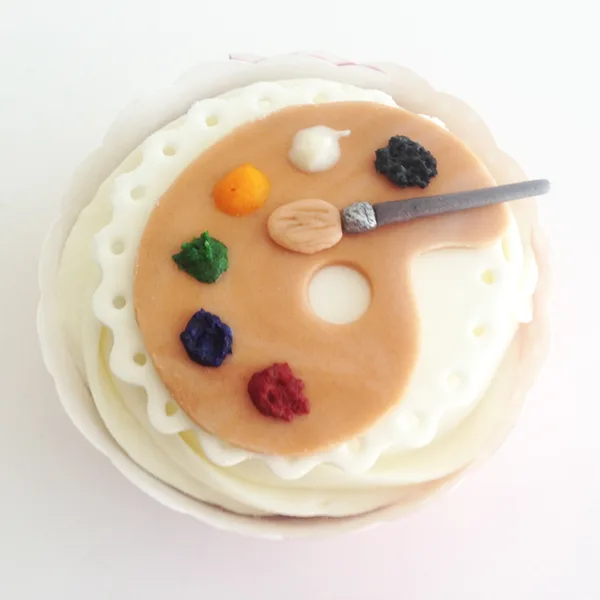
Вам понадобятся:
- кондитерская мастика одного или нескольких оттенков (читайте 1-й шаг);
- белый шоколад;
- разноцветные красители.
Инструменты:
- скалка;
- трафарет палитры;
- нож;
- бумажный корнет или ложка.
Порядок действий:
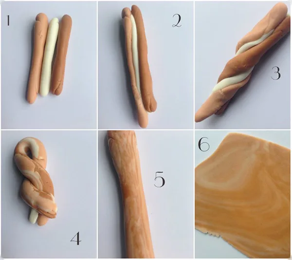
- Палитра может быть белой или «деревянной». Чтобы сымитировать дерево, возьмите три кусочка мастики: белого цвета и двух оттенков коричневого. Скатайте из каждого кусочка колбаску. Соедините их вместе и скрутите в плотный жгут. Согните вдвое и снова закрутите в жгут (принцип окрашивания мраморной мастики). Продолжайте повторять эти шаги, пока не получите нужную «текстуру». Раскатайте получившуюся массу.
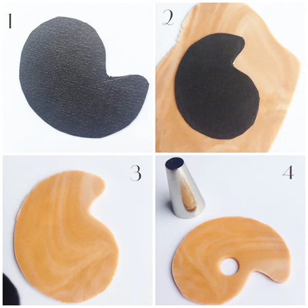
- Нарисуйте на картоне или бумаге палитру и вырежьте изображение. Можете также распечатать готовый трафарет. Положите шаблон на мастику и вырежьте палитру ножом. Не забудьте прорезать также и дырочку.
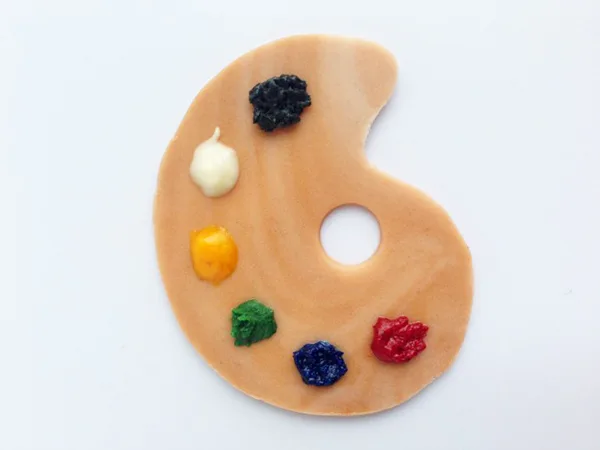
- Однако эта часть торта в 1 класс будет неполной без «красок». Для них растопите белый шоколад и добавьте в него красители разных цветов (о том, какие бывают красители, читайте тут). Положите шоколад на палитру ложкой или выдавите из корнета. Для «красок» можно использовать также подкрашенный масляный крем. Такой декор можно приготовить и для капкейков на 1 сентября.
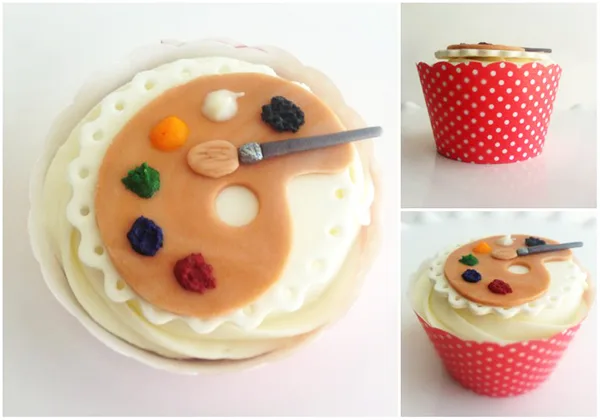
Видео:
Как вылепить кисть из мастики
Есть несколько способов приготовления кисточки, но мы рассмотрим самый простой из них – без экструдера. Готовый декор может быть любого нужного вам размера, например маленького для капкейков или большого для праздничного детского тортика. Итак, вам понадобятся:
- мастика серого и светло-коричневого цвета;
- нож;
- зубочистка;
- вода;
- серебристый кандурин.
Порядок действий:
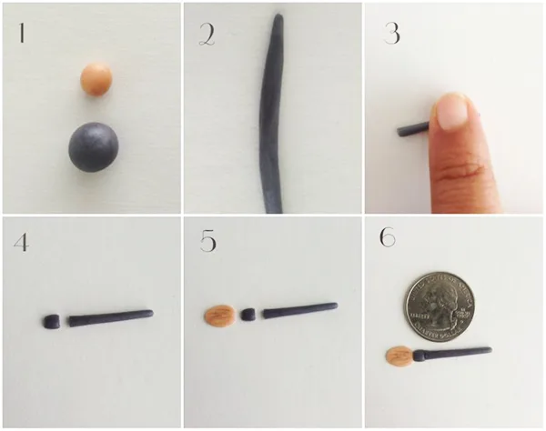
- Скатайте один шарик большего размера из серой мастики и один – меньшего из светло-коричневого кусочка.
- Раскатайте серый шарик в тонкую и довольно длинную колбаску. Толщина ее по всей длине должна быть примерно одинаковой. Пальцем придавите один из ее концов, чтобы он имел конусообразный вид.
- Отрежьте придавленный участок колбаски – должен получиться небольшой квадратик.
- Для ворса придайте светло-коричневому шарику нужную форму. Продавите на нем тонкие частые полоски зубочисткой.
- Соедините получившиеся части и скрепите их водой, пищевым клеем или белком.
- Покрасьте маленькую квадратную часть кисти серебристым кандурином. Готово!
Это важно!
Чтобы украсить торт 1 сентября, сразу перед подачей, кисточку нужно сделать заранее, как и коржи. Дайте ей полностью высохнуть, а затем положите на готовую выпечку.
Идеи оформления
{kind=link}
{kind=link}
{kind=link}
{kind=link}
{kind=link}
{kind=link}
{kind=link}
{kind=link}
{kind=link}
{kind=link}
{kind=link}
{kind=link}
{kind=link}
{kind=link}
{kind=link}


{kind=link}